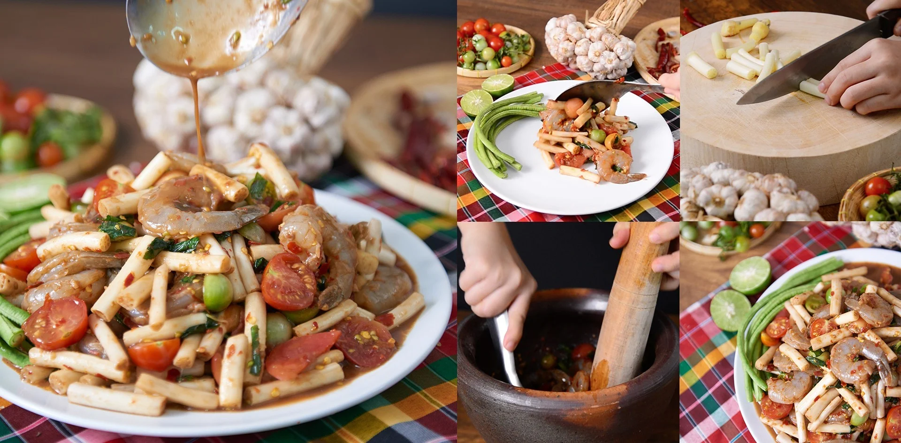
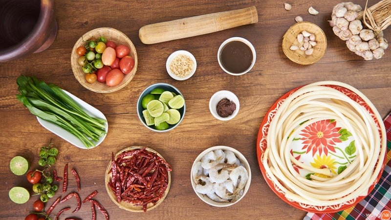
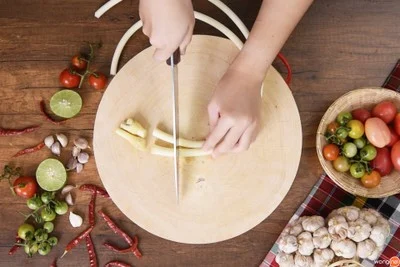
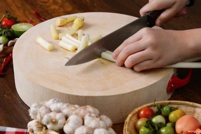
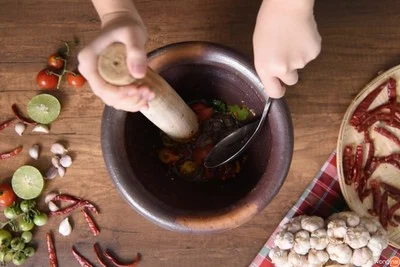
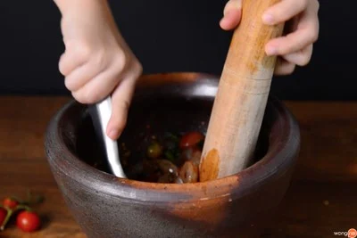
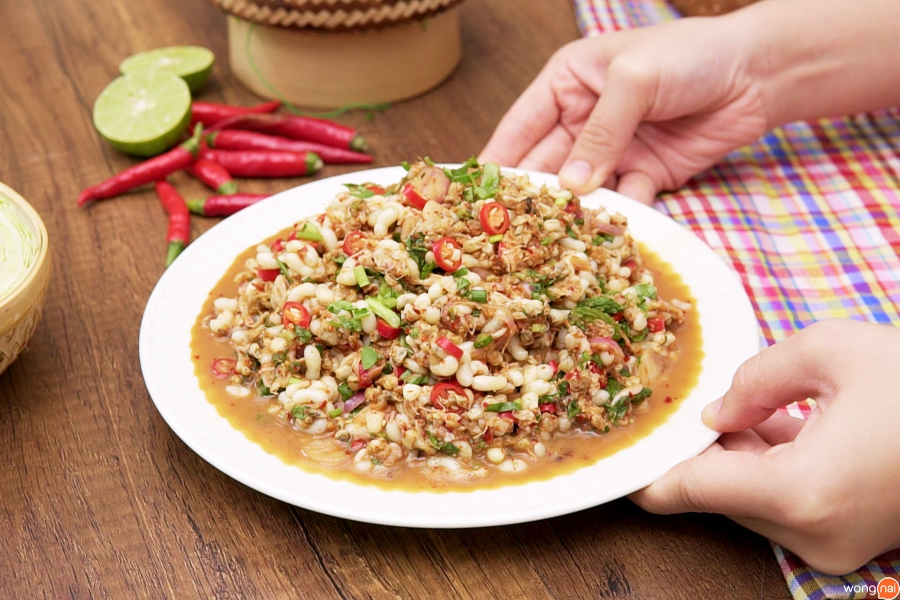

วิธีทำ “ตำไหลบัวกุ้งสด” เมนูอาหารอีสาน แซ่บจนต้องซ้ำ
เด็ดจนต้องยอม! กับเมนูอาหารอีสานสุดแซ่บ “ตำไหลบัวกุ้งสด” ที่มาพร้อมวิธีทำที่ทำตามได้ไม่ยาก
พร้อมแล้วตามมาเข้าครัวกันเลย!

วัตถุดิบเมนู “ตำไหลบัวกุ้งสด”
วัตถุดิบ
- 1. ไหลบัว 1 มัด
- 2. กุ้งสด 20 ตัว
- 3. มะเขือส้ม 10 ลูก
- 4. มะเขือเทศสีดา 6 ลูก
- 5. ผักชีฝรั่ง 10 ใบ
- 6. มะนาว 4 ลูก
- 7. น้ำปลาร้า 2 ทัพพี
- 8. กะปิ 1 ช้อนโต๊
- 9. น้ำตาลปี๊บ 1 ช้อนโต๊ะ
- 10. พริกแห้ง 15 เม็ด
- 11. กระเทียม 6 กลีบ
วิธีทำ ตำไหลบัวกุ้งสด
STEP 1 :หั่นผัก

นำมาหั่นท่อนขนาด 2 นิ้ว

แล้วพักไว้เตรียมนำไปตำ
STEP 2 : ตำ
แล้วใช้สากโขลกมะเขือเทศเบา ๆ แค่ให้ได้รสชาติของมะเขือเทศ
ใช้ทัพพีในการคนให้เข้ากัน แล้วตักขึ้นจัดเสิร์ฟได้เลยจ้า

ใส่มะเขือเทศสีดา มะเขือส้ม และผักชีฝรั่งลงไป
ใส่มะเขือเทศสีดา มะเขือส้ม และผักชีฝรั่งลงไป
แล้วใช้สากโขลกมะเขือเทศเบา ๆ

ใส่กุ้งสดลงไปคลุก ตามด้วยไหลบัวที่หั่นแล้ว
ใส่กุ้งสดลงไปคลุก ตามด้วยไหลบัวที่หั่นแล้ว
ใช้ทัพพีในการคนให้เข้ากัน
STEP 3 : จัดเสิร์ฟ

ตักตำไหลบัวกุ้งสดใส่ลงในจาน

เท่านี้ก็เชิญแซ่บได้แล้วจ้า >< !
ทั้งแซ่บและยังทำง่ายอีกด้วยใช่ไหมคะ กับเมนู “ตำไหลบัวกุ้งสด” ที่จิ๋วได้พาเพื่อน ๆ ทำกันในวันนี้ หรือถ้าอยากทำเมนูแซ่บ ๆ แต่ไม่ดิบจิ๋วขอแนะนำสูตรเมนู
“ส้มตำหอยแครง” ให้ได้ลองทำตามกันที่บ้าน ทำแล้วอย่าลืมโพสต์รูปมาอวดกันด้วยนะคะ